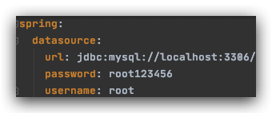
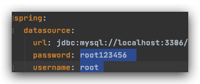

在开发的过程中坎坷不断。今天在Spring Boot中碰到了这个异常：
`Caused by: com.mysql.cj.exceptions.CJException: Access denied for user 'root'@'localhost' (using password: YES)`
本篇文章就来记录下可能的情况以及解决方案。
问题原因
问题的根源就在数据库登陆上。肯定是账号和密码有误，所以我们要仔细检查配置文件，有以下几个地方容易出错：
情况一：检查配置文件是否包含空格
因为application.yml似乎并不会给我们的配置文件进行去空格处理，所以我们来仔细检查。配置文件人模人样的，看起来没啥问题：

结果一选中：

呵！其实不然。所以一定要去除多余的空格！
情况二：检查username和password值是否写反
因为26个字母中u在p的后面，所以默认的yml排序中username会在password下面。阿航就是踩了这个坑！以为用户名在上方，导致写反！
情况三：检查IP是否正确
如果确定账户密码正确，我们就来看看IP是否有误吧。
在数据库中输入以下SQL进行查询（这里以MySQL为例）：
` SELECT CONCAT( USER, '@', HOST ) Result FROM mysql.USER;`
查看返回结果是否包含你的报错。如果不包含就说明你的IP未被创建。
情况四：检查数据库服务器配置
使用其他的软件连接你的数据库（如Navicat），使用相同的用户名和密码看看能否登陆。如果不能登陆则是数据库层的问题，与代码无关了。
结语
总之，解决方案就是细心。。